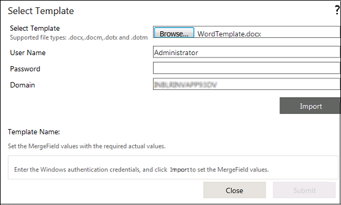

You can select the templates in this property window. To open this window, click the button for the 'Select Template' property.
The top half of the window has the following fields to specify the login credentials and select the template.
Choose a Template - You can enter the full path to the template here. Alternatively, you can click Browse to browse to the location of the template and select it.
User Name - You can specify the user name here.
Password - You can specify the password here.
Domain - You can specify the domain name here.
The Upload button at the bottom of the screen can be used to upload the selected template. This is displayed in the lower half of the window.

The Template Name displays the name of the selected template. The place holders in the template are displayed in a grid with the following controls.
The Placeholder name
The Value type drop down - You can select the type of value to be assigned to the placeholder from this drop down. You can select Value, Variable, XML Variables or Content here.
The Value text box/drop down - You can specify the actual value to be assigned to the placeholder here. If you select "Value" in the previous drop down, a text box is displayed here and you can enter the value directly. Otherwise, a drop down is displayed, where you can select from the corresponding collection (Variable, XML Variable or Content).